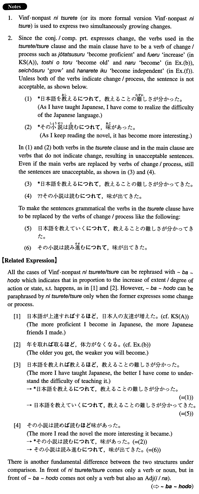

←
DoJG
→
につれて/つれ
(I. 285)
Example sentences
(ksa).
日本語が上達する
につれて
日本人の友達が増えた。
As my Japanese became more proficient, the number of my Japanese friends increased.
(ksb).
時代の変化
につれて
、文化も変わっていく。
Culture also changes with the change of the times.
(a).
病気が治ってくる
につれて
、食欲が出てきた。
As I recovered from my illness, I regained my appetite.
(b).
年を取る
につれて
、体力がなくなる。
As people grow older, they lose their physical strength.
(c).
日本の生活が長くなる
につれて
、日本のよさ、悪さがよく分かってきた。
As I've spent more time in Japan, I have come to understand the good and bad parts of Japan better.
(d).
日本の経済力が伸びる
につれて
、日本語の学生が増えてきた。
As Japan's economic strength has grown, Japanese language students have increased.
(e).
秋が深くなる
につれて
、紅葉が綺麗になってきた。
As we've moved further into autumn, the coloured leaves have become more beautiful.
(f).
子供は成長する
につれて
、親から離れていく。
As children grow up, they become independent of their parents.
(g).
季節の変化
につれて
、風景も変わる。
The scenery also changes with season changes.
(h).
産業の発展
につれて
、公害も増えていく。
With industrial development, pollution also increases.
Formation
(i)
Vinformal nonpast
につれて
読む
につれて
As one reads something
(ii)
Noun
につれて
気温の変化
につれて
With the change of temperature
